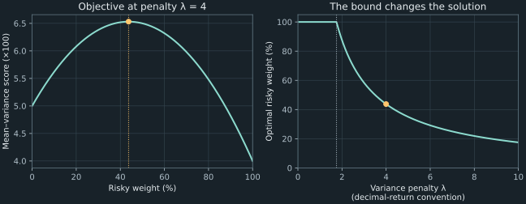

3. Portfolio choice and the first numerical workshop
A committee must split a fixed budget between a certain return and an uncertain return. A coarse grid suggests placing 44% in the uncertain asset; an analytic calculation gives 43.75%. The small discrepancy has an exact numerical explanation. A much larger discrepancy appears if returns are converted from decimal fractions to percentage points while a preference coefficient is left unchanged. To understand either answer, the committee needs a stated objective, feasible allocations, and consistent units.
We use one-period illustrative inputs: a certain return of 5%, a risky return with mean 12% and standard deviation 20%, and an explicitly chosen variance penalty. These are teaching inputs, not current deposit rates, historical index estimates, return forecasts, or a recommendation for a real investor. The same model supports an analytic solution, a grid approximation, and a first constrained-optimization calculation. The chapter then works through the week's bond, interpolation, and logarithm problems.
Source spine: Portfolio Choice and the two first-week problem workshops, playlist positions 7–9. Local derivations, constraint checks, distribution examples, and computational error bounds extend the source discussion. Every printed computed value is reproduced by the chapter program.
3.1 Describe the portfolio before optimizing it Recording 7, 00:51
A one-period simple return is the change in value divided by the initial investment over a specified holding period. A return of 0.05 means that an initial unit becomes 1.05 at the period's end. All returns in this model concern the same period, in the same currency, and are measured as decimal fractions. Combining an annual return for one asset with a monthly return for another would define a different and inconsistent comparison.
The safe asset has a known return $r_f=0.05$ over this holding period. Safety here means certainty of this modeled payoff at that date. It does not mean that every government bond has a certain resale price before maturity or that a policy interest rate is available to every investor. The risky asset has random return $R$ with finite second moment. Define its mean $m=\mathbb E[R]=0.12$, its variance $\sigma^2=\mathbb E[(R-m)^2]=0.04$, and its standard deviation $\sigma=0.20$, the positive square root of the variance. Expectation averages possible outcomes with their assigned probabilities; it is not a promise about the realized return.
A portfolio weight is the fraction of the initial budget assigned to an asset. Let $w$ be the risky weight and $w_s$ the safe weight. A fully invested budget requires $w_s+w=1$. We prohibit short selling and borrowing in the initial problem, so both weights must be nonnegative. Eliminating $w_s$ gives $w_s=1-w$ and $0\le w\le1$.
Assume divisible holdings, no transaction costs or taxes, no intermediate cash flows, and no rebalancing during the period. Starting from unit wealth, the terminal value is $(1-w)(1+r_f)+w(1+R)$. Subtracting the initial unit gives the portfolio's random return
\[ R_p=(1-w)r_f+wR=r_f+w(R-r_f). \tag{3.1} \]Linearity of expectation now gives $\mathbb E[R_p]=r_f+w(m-r_f)$. To obtain the variance, first subtract that mean from (3.1): $R_p-\mathbb E[R_p]=w(R-m)$. Squaring and taking expectations yields
\[ \mathbb E[R_p]=r_f+w(m-r_f),\qquad \operatorname{Var}(R_p)=w^2\sigma^2. \tag{3.2} \]The certain component vanishes from the centered return. The square on the weight comes from squaring the deviation, rather than from an arbitrary penalty convention. Since $w\ge0$, the portfolio standard deviation is $w\sigma$. If negative weights were allowed, it would instead be $|w|\sigma$.
The excess expected return $m-r_f$ is the expected compensation for replacing a unit of safe exposure with risky exposure in this model. Here it is 0.07 per period. Increasing $w$ raises the mean linearly and variance quadratically. Those two consequences do not determine a unique allocation until we say how they are compared.
A mean–variance objective assigns a score to that comparison. Choose a positive coefficient $\lambda$, representing the stated strength of the variance penalty, and define
\[ F(w)=\mathbb E[R_p]-\frac{\lambda}{2}\operatorname{Var}(R_p) =r_f+w(m-r_f)-\frac{\lambda\sigma^2}{2}w^2. \tag{3.3} \]For the running case, $\lambda=4$. This is a preference-model input. Its numerical value depends on how returns and the objective are scaled. The factor one half simplifies the derivative; removing it while keeping the same coefficient would change the preference rule.
Mean and variance as a portfolio-selection criterion appear in Markowitz's Portfolio Selection (1952), whose opening discussion separates beliefs about returns from choosing allocations given those beliefs. Equation (3.3) is our specified scalar tradeoff for a safe/risky teaching case. It is not a universal formula for expected utility, nor does variance distinguish harmful downside from favorable upside. A later example will expose that limitation using two return distributions with identical moments.
3.2 Solve the constrained problem, including its boundaries Recording 7, 12:09
Write $\Delta=m-r_f$ for the excess expected return. Assume first that $\lambda\gt0$ and $\sigma\gt0$. Differentiating (3.3) gives
\[ F'(w)=\Delta-\lambda\sigma^2w,\qquad F''(w)=-\lambda\sigma^2\lt0. \tag{3.4} \]A negative second derivative makes this objective strictly concave: its slope decreases as the risky weight rises. The unconstrained stationary point is $w_0=\Delta/(\lambda\sigma^2)$. It maximizes the quadratic over the whole real line, but the original investment problem permits only $[0,1]$. A negative stationary weight would short the risky asset; a weight above one would require a negative safe holding.
For positive variance and penalty, the unique constrained optimum is
\[ w_* = \min\!\left(1,\max\!\left(0, \frac{m-r_f}{\lambda\sigma^2}\right)\right). \tag{3.5} \]Completing the square in (3.3) gives the exact identity $F(w)=F(w_0)-\lambda\sigma^2(w-w_0)^2/2$, with $F(w_0)=r_f+\Delta^2/(2\lambda\sigma^2)$. Maximizing over $[0,1]$ is therefore equivalent to choosing the point in that interval nearest $w_0$. If $w_0\lt0$, the nearest point is zero; if $w_0\gt1$, it is one; otherwise it is $w_0$ itself. The squared distance has a unique minimizer on this interval. ∎
There is also a derivative interpretation of the endpoints. If $\Delta\le0$, then $F'(w)\le0$ throughout the feasible interval, so taking any positive risky exposure cannot improve the score. If $\Delta\ge\lambda\sigma^2$, the derivative remains nonnegative up to one, so the upper endpoint is optimal. Between these thresholds, the derivative changes sign at the interior stationary point. Boundary equality leaves a unique optimum when the quadratic curvature is strictly negative.
This finite quadratic gives a direct proof of global optimality. The sign-reversed first-order criterion for concave functions in Boyd and Vandenberghe, §3.1.3, printed page 69, provides the broader optimization context: a stationary point of a differentiable concave objective is globally maximizing on its convex domain. Here the square-completion argument additionally exposes exactly how far another allocation falls below the optimum.
For the running inputs, $\Delta=0.07$ and $\lambda\sigma^2=4(0.20)^2=0.16$. Thus $w_0=0.07/0.16=0.4375$, which is feasible. The optimal safe weight is $1-w_*=0.5625$. Substituting these weights into (3.2) gives
\[ \mathbb E[R_p]=0.080625,\qquad \operatorname{Var}(R_p)=0.00765625,\qquad \operatorname{sd}(R_p)=0.0875. \tag{3.6} \]The portfolio has expected return 8.0625% and standard deviation 8.75% over the specified period. Its objective value is $0.080625-(4/2)(0.00765625)=0.0653125$. This last number is the mean–variance score under the selected scaling. It is neither a guaranteed investment return nor a probability of achieving the mean.
The boundary formula matters when parameters change. At the same rates and volatility with $\lambda=1$, the unconstrained weight exceeds one, so the constrained answer is one. With $\lambda=8$, the answer is 0.21875. The transition to an interior solution occurs at $\lambda=\Delta/\sigma^2=1.75$ for these positive-premium inputs. Extrapolating the interior formula below that threshold would recommend borrowing that the model explicitly prohibits.
If $\lambda=0$, the objective is linear in $w$: choose one when $\Delta\gt0$, zero when $\Delta\lt0$, and any feasible weight when $\Delta=0$. The same alternatives apply if $\sigma=0$, since the random return then equals its mean almost surely and the variance penalty vanishes. A formula that divides by $\lambda\sigma^2$ must not be applied to either degenerate case. The program returns one canonical feasible weight when every weight is optimal, and does not mislabel that choice as uniqueness.
3.3 Measure the loss from a finite grid Recording 7, 10:00
A grid search evaluates the objective at a finite collection of feasible weights and chooses a maximizing candidate. Let $M$ be a positive integer counting equal intervals, and let $h=1/M$ be their width. The candidate set is $\{0,h,2h,\ldots,Mh\}$ and contains $M+1$ points. In particular, increments of 0.01 from zero through one give 101 candidates, including both endpoints.
Denote an exact maximizer over these candidates by $\widehat w_M$. The complete-square proof in the previous section makes the approximation error unusually transparent. If the continuous optimum is interior, $w_*=w_0$, so for every candidate $w$ we have
\[ F(w_*)-F(w)=\frac{\lambda\sigma^2}{2}(w-w_*)^2. \tag{3.7} \]Maximizing the score is therefore equivalent to selecting a nearest grid point. Some grid point is within $h/2$ of any interior target. Combining that distance bound with (3.7) proves
\[ 0\le F(w_*)-F(\widehat w_M) \le\frac{\lambda\sigma^2h^2}{8}. \tag{3.8} \]If the constrained optimum is an endpoint, that endpoint is included in the grid and an exact grid search attains it. At an interior midpoint there can be two equally good grid choices even though the continuous optimum is unique. A discrete tie does not contradict strict concavity over the continuous interval.
Table 3.1 compares the baseline exact weight 0.4375 with three executed grids. The objective gaps follow the quadratic distance identity. The last grid chooses 0.437; its adjacent candidate 0.438 is equally close in exact arithmetic. Rounding can decide which nearly tied candidate an implementation returns. The analytic bound concerns exact objective comparisons; the program additionally checks its selected finite inputs against the analytic answer.
| Intervals $M$ | Candidates | Selected risky weight | Observed objective gap | Bound (3.8) |
|---|---|---|---|---|
| 10 | 11 | 0.400000 | $1.125\times10^{-4}$ | $2.000\times10^{-4}$ |
| 100 | 101 | 0.440000 | $5.000\times10^{-7}$ | $2.000\times10^{-6}$ |
| 1000 | 1001 | 0.437000 | $2.000\times10^{-8}$ | $2.000\times10^{-8}$ |
The grid's score error is not the uncertainty of a forecast or the realized loss an investor will incur. It compares two choices under identical stipulated inputs and preferences. Refining the grid answers the computational question more accurately while leaving uncertainty in $m$, $\sigma$, and the preference specification unchanged.
Figure 3.1 shows the same distinction geometrically. The objective has a smooth interior peak at the baseline penalty. Changing that penalty eventually pushes the constrained solution to an endpoint. A solver should reproduce both the smooth region and the bound, rather than extrapolate one formula indefinitely.

A grid also has a dimension cost. With $n$ assets and a budget equality, one weight can be eliminated, leaving $n-1$ independent coordinates. A Cartesian grid with $M+1$ choices in each free coordinate has $(M+1)^{n-1}$ candidate tuples before infeasible weights are discarded. Its growth is exponential in the number of free coordinates for fixed resolution. A two-dimensional 100-by-100 grid has 10,000 points; that arithmetic does not generalize into a universal cubic-cost law.
One can avoid infeasible Cartesian points by distributing $M$ identical budget shares among $n$ nonnegative asset holdings. The number of such allocations is $\binom{M+n-1}{n-1}$: place $n-1$ separators among a row of $M$ shares to divide them into $n$ groups. At $M=100$, the counts are 101 for two assets, 5,151 for three, and 4,263,421,511,271 for ten. Better enumeration helps, but does not make fine grids cheap in many dimensions. The later matrix and optimization chapters develop methods that exploit structure instead of evaluating every allocation.
3.4 What the Lagrange multiplier measures Recording 7, 18:37
Eliminating the safe weight reduced the budget equality to a one-variable problem. A Lagrange multiplier keeps the equality visible while incorporating it into the stationarity equations. Let $w_s$ and $w_r$ be the safe and risky weights. For the moment, consider the budget equality without the nonnegativity bounds. Define the Lagrangian
\[ \mathcal L(w_s,w_r,\nu) =w_sr_f+w_rm-\frac{\lambda\sigma^2}{2}w_r^2 -\nu(w_s+w_r-1). \tag{3.9} \]The new real variable $\nu$ multiplies the constraint residual. Its sign convention is fixed by (3.9). The coefficient $\lambda$ remains the variance-preference parameter from the objective. These two parameters have different jobs: $\lambda$ is supplied to define the decision rule, while $\nu$ is found along with the optimal weights.
The necessity of this construction can be seen directly here. A small feasible change adds $\delta$ to $w_r$ and subtracts $\delta$ from $w_s$. At an interior optimum, the derivative in that direction must vanish, giving $m-\lambda\sigma^2w_r-r_f=0$. Setting $\nu=r_f$ expresses this same balance as equality of the two marginal contributions. The multiplier equations organize a feasible-direction condition rather than create an additional preference.
At an interior stationary point, the three partial derivatives of the Lagrangian vanish. Differentiating each term explicitly gives
\[ r_f-\nu=0,\qquad m-\lambda\sigma^2w_r-\nu=0,\qquad w_s+w_r=1. \tag{3.10} \]The first equation gives $\nu=r_f$. Substitute it into the second to obtain $w_r=(m-r_f)/(\lambda\sigma^2)$; the budget then determines $w_s$. This reproduces the substitution solution. The concavity argument in section 3.2 establishes that this stationary point maximizes the equality-constrained objective. If either resulting weight is negative, the equality calculation alone has not solved the original bounded problem; the clipping rule must still be applied.
Although the objective is quadratic, equations (3.10) are linear in the unknown weights and multiplier. They can be written as
\[ \begin{bmatrix} 0&0&1\\ 0&\lambda\sigma^2&1\\ 1&1&0 \end{bmatrix} \begin{bmatrix}w_s\\w_r\\\nu\end{bmatrix} =\begin{bmatrix}r_f\\m\\1\end{bmatrix}. \tag{3.11} \]The first row fixes the multiplier, the second balances excess mean return against marginal variance penalty, and the third enforces the budget. This is why linear systems arise from a nonlinear-looking financial objective. Numerical linear algebra will become useful again when the weights form a longer vector and the risk term contains many interacting entries.
Derive the marginal-value interpretation
To interpret $\nu$, change the right-hand side of the budget equality from one to a nearby value $B$. Keep exposures measured relative to the original reference budget, and keep $r_f$, $m$, $\sigma$, and $\lambda$ fixed. The criterion remains $w_sr_f+w_rm-\lambda\sigma^2w_r^2/2$, while the constraint becomes $w_s+w_r=B$. This defines a specific perturbed problem. Its criterion measures net return contribution per reference budget, rather than terminal principal plus return.
Substituting $w_s=B-w_r$ leaves $Br_f+w_r\Delta-\lambda\sigma^2w_r^2/2$. In a region where the risky optimum remains interior, $w_r=w_0=\Delta/(\lambda\sigma^2)$ is unchanged. The optimized value is consequently
\[ \mathcal V(B)=Br_f+\frac{\Delta^2}{2\lambda\sigma^2},\qquad \mathcal V'(B)=r_f=\nu. \tag{3.12} \]For the running case, this interior region includes values of $B$ near one, with $B\gt w_0$ ensuring a positive safe exposure. Extra budget at the margin is placed in the safe component because the risky holding is already optimal under the fixed variance penalty. The multiplier is thus the local marginal value of relaxing this particular budget constraint. It does not measure the investor's risk aversion, and its equality to $r_f$ is specific to this objective and active-constraint regime.
Changing the model changes the interpretation. Including terminal principal in the criterion would add $B$ to $\mathcal V(B)$ and one to its derivative. Rescaling preferences with the new total wealth would define another perturbed problem. At a binding nonnegativity constraint, the interior formula need not apply. A multiplier needs its objective, constraint, and sign convention to have an economic meaning.
Boyd and Vandenberghe, §5.6, printed pages 249–252, develops optimal-value sensitivity under explicit regularity and duality assumptions. Equation (3.12) verifies the interpretation directly for this quadratic, so no general sensitivity theorem is being used without its hypotheses. The sign here follows our maximization Lagrangian in (3.9).
More assets change the algebra, not the validity of substitution
For $n$ asset weights, the budget equality still permits $w_n=1-\sum_{i=1}^{n-1}w_i$. Substitution therefore remains mathematically valid with more than two assets. It leaves a multivariable problem, and the remaining constraints and covariance terms can become less convenient to express. Lagrange multipliers organize those coupled conditions; they are not the only valid way to eliminate an equality.
The risk calculation also changes when several returns are uncertain. For two risky returns $R_A$ and $R_B$, define means $m_A$ and $m_B$ and covariance $\operatorname{Cov}(R_A,R_B)=\mathbb E[(R_A-m_A)(R_B-m_B)]$. Expanding the square of a weighted centered return gives a cross term $2w_Aw_B\operatorname{Cov}(R_A,R_B)$ in addition to the two weighted variances. The deterministic safe component made this cross term vanish in (3.2). For many risky holdings, the collection of such terms becomes the covariance matrix. Counting each asset's variance alone loses the information about how the assets move together.
3.5 Separate parameter sensitivity from numerical precision Recording 7, 24:18
For a positive-premium interior solution, the analytic formula gives comparative statics without another optimization run. Holding the other inputs fixed and differentiating $w_0=(m-r_f)/(\lambda\sigma^2)$ yields
\[ \frac{\partial w_0}{\partial m}=\frac1{\lambda\sigma^2},\qquad \frac{\partial w_0}{\partial\lambda}=-\frac{m-r_f}{\lambda^2\sigma^2},\qquad \frac{\partial w_0}{\partial\sigma}=-\frac{2(m-r_f)}{\lambda\sigma^3}. \tag{3.13} \]A larger excess mean return increases risky exposure. A larger positive variance penalty or volatility decreases it when the excess mean is positive. These derivatives describe the interior region. Once the optimum is clipped at zero or one, sufficiently small parameter changes can leave the constrained weight unchanged. At a transition between regimes, an ordinary two-sided derivative need not exist.
At the running inputs, the derivative with respect to the risky mean is 6.25. A change of one percentage point in that mean, from 0.12 to 0.13, moves the interior weight from 0.4375 to 0.5. This change is larger than the difference between the coarse grid and analytic baseline. Extra grid refinement cannot establish whether 0.12 or 0.13 is a better description of future returns. Estimating a parameter and optimizing a model conditional on it are separate tasks.
The preference coefficient changes with return units
Suppose the same random return is written in percentage-point units: $\widetilde R=100R$. Then its mean is multiplied by 100 and its variance by $100^2$. To represent the same ordering of portfolios, require the new objective to equal 100 times the original objective. If its penalty is $\widetilde\lambda$, comparison of coefficients gives
\[ 100\mathbb E[R_p]-\frac{\widetilde\lambda}{2}100^2\operatorname{Var}(R_p) =100\left(\mathbb E[R_p]-\frac{\lambda}{2}\operatorname{Var}(R_p)\right), \qquad \widetilde\lambda=\frac{\lambda}{100}. \tag{3.14} \]Thus the inputs 5, 12, and 20 with penalty 0.04 reproduce the risky weight 0.4375. Retaining penalty 4 instead produces 0.004375. The financial return distributions have not changed; the second computation uses a different preference model. A coefficient called “risk aversion” needs its objective and units before its numerical value can be compared across implementations.
Two moments do not specify downside behavior
Consider two discrete risky-return distributions. Distribution A gives returns −0.08 and 0.32, each with probability one half. Distribution B gives returns −0.28, 0.12, and 0.52 with probabilities $1/8$, $3/4$, and $1/8$. Both are original teaching constructions, rather than observed return data.
For A, symmetry around 0.12 gives mean 0.12 and variance $(0.20)^2=0.04$. For B, the middle outcome is its mean, and the two equally likely deviations are −0.40 and 0.40. Its variance is $(1/8)(0.40)^2+(1/8)(0.40)^2=0.04$. The program verifies both pairs of moments by direct weighted sums.
Yet the probability of a risky-asset return below −0.20 is zero under A and $1/8=0.125$ under B. The mean–variance objective assigns the two risky opportunities the same score at every weight because it uses only their means and variances. An investor concerned specifically with such a downside event has supplied a preference the two-moment criterion does not express. The distributional comparison exposes a model boundary, even when the optimizer is exact.
This does not invalidate the finite quadratic calculation. It identifies what that calculation decides: the best feasible allocation under specified moment beliefs and a specified mean–variance tradeoff. General expected-utility and tail-risk decisions require additional structure. The later utility chapter develops those objectives rather than inferring them from the name of a coefficient.
3.6 Workshop: translate a bond quote into dated payments Recording 8, 1:06
The first workshop changes the decision from an allocation to a purchase: a dealer asks 99 currency units for a bond with face value 100, a 7% annual coupon paid semiannually, and two years remaining. Face value is the principal repaid at maturity. The annual coupon rate determines the contractual interest payment as a fraction of that face value; semiannual payment divides the annual coupon into two equal installments. Assume valuation occurs immediately after a coupon date, so there is no accrued interest to add to the quoted price.
Comparable bonds are stipulated to yield 8% nominal annually with semiannual compounding. Treat that quote as the appropriate flat discount rate for these payments. This is an assumption of the exercise: a single comparable yield does not generally identify all the maturity-specific discount factors of a market curve. Also assume the payments are certain, with no embedded redemption option, taxes, fees, or transaction costs.
The coupon amount is $100(0.07)/2=3.5$ every half-year. At the final date, the holder receives both a coupon and principal, giving 103.5. Let $k$ denote the number of half-years from valuation, rather than years. The per-period discount rate is $0.08/2=0.04$. Each exponent must use the same period as that rate:
\[ P(0.08)=\frac{3.5}{1.04}+\frac{3.5}{1.04^2} +\frac{3.5}{1.04^3}+\frac{103.5}{1.04^4} =98.185052388\ldots. \tag{3.15} \]The four present values are approximately 3.365384615, 3.235946746, 3.111487255, and 88.472233772. Their sum supplies a useful independent bookkeeping check: the final payment must include principal exactly once. Forgetting that principal or discounting the final coupon separately and then including it again would change the financial contract, rather than merely introduce a numerical approximation.
Under these assumptions, the asking price exceeds the modeled value by approximately 0.814947612. That comparison supports rejecting or negotiating the quote within the exercise. In an actual trade, differences in credit exposure, liquidity, accrued interest, and payment terms would have to be assessed before declaring a comparable yield appropriate. The 7% coupon is a contractual payment rule; the 8% yield is the stipulated valuation input. They need not be equal.
A rate shock changes value while the contract stays fixed
Now change only the nominal annual discount yield to 9%, still compounded semiannually. If $j$ denotes this nominal yield, the same cash flows give
\[ P(j)=\sum_{k=1}^{4}\frac{3.5}{(1+j/2)^k} +\frac{100}{(1+j/2)^4},\qquad j\gt-2. \tag{3.16} \]The domain ensures positive per-period discount factors. Differentiating each finite term shows the direction of the effect. A positive cash flow $C_k$ contributes derivative $-(k/2)C_k(1+j/2)^{-k-1}$, which is negative. Summing preserves that sign. Thus the value of this fixed positive-payment stream decreases strictly as its discount yield increases. The argument does not apply unchanged to streams containing negative payments or rate-dependent coupons.
Direct reevaluation gives $P(0.09)=96.412474302\ldots$, a change of $-1.772578086\ldots$ currency units. The rise is one percentage point, or 100 basis points, in the nominal annual quote; the half-year rate rises by 0.005. The price movement is exposure to a financial input, not floating-point error. The later bond-calculus chapter develops derivatives that approximate such movements and measures their approximation error.
Holding a numerical quote fixed changes the accumulation rule
The second workshop invests 100 for one year at a nominal annual quote of 8%. Let $b$ be the positive integer number of equally spaced compounding periods in that year. The final amount is $100(1+0.08/b)^b$. Annual, semiannual, and monthly compounding give approximately 108, 108.16, and 108.299950681, respectively. Continuous compounding gives $100e^{0.08}=108.328706767\ldots$. The continuous formula follows from the limiting accumulation rule developed in chapter 2.
These are different contracts because the same numerical nominal quote is held fixed while its compounding frequency changes. If quotes were converted to represent the same one-year growth factor, the terminal amounts would agree. This distinction is the same one needed in (3.15): dividing a nominal semiannual quote by two is justified by its specified convention, not by a general rule that all annual returns halve over six months.
3.7 Workshop: approximate a missing input and a function value Recording 9, 7:31
The portfolio part of the workshop repeats the running allocation with $r_f=0.05$, $m=0.12$, $\sigma=0.20$, and $\lambda=4$. Substitution and the equality Lagrangian both give risky weight 0.4375. Substituting that weight back into the return and variance formulas gives mean 0.080625 and standard deviation 0.0875. Solving for the weight and evaluating the chosen portfolio are separate operations; the reported mean alone is not the objective because the objective also subtracts the variance penalty.
The workshop then asks for a rate at an unquoted maturity. Suppose annual zero rates of 6% and 7% are given at years 3 and 5. An annual zero rate is the effective annual rate that discounts one payment at its specified maturity. For this calculation, adopt the annual-zero convention explicitly; a generic bond yield at each date would not automatically be an interchangeable input. A payment at year 3.5 is one quarter of the way between those dates. Linear interpolation of the rates gives
\[ z_L(3.5)=0.06+\frac{3.5-3}{5-3}(0.07-0.06) =0.0625. \tag{3.17} \]The interpolation weight is dimensionless because the numerator and denominator are both in years. The value lies between the endpoint rates and closer to the three-year rate, two useful checks on an implementation. This computation defines a rule for filling the missing input. It does not prove that the unobserved market rate equals 6.25%. Chapter 2 derives a conditional interpolation-error bound and explains why interpolating a different curve representation can produce a different price.
Derive the logarithm polynomial together with its remainder
The next task is to approximate $\log(1.5)$, where $\log$ denotes the natural logarithm. Define $x$ by $1+x=1.5$, so $x=0.5$. Rather than memorizing a series, start from a finite identity that can be checked by multiplication. For a positive integer $n$ and any real $t\ne-1$, the finite geometric sum gives
\[ \frac1{1+t}=\sum_{k=0}^{n-1}(-t)^k +\frac{(-t)^n}{1+t}. \tag{3.18} \]Integrate from 0 to $x$, with $x\gt-1$ so the interval does not cross the singularity at $-1$. The left side integrates to $\log(1+x)$. Each term $(-t)^k$ integrates to $(-1)^k x^{k+1}/(k+1)$. Define the degree-$n$ polynomial $L_n$ and its exact remainder $E_n$ by
\[ \log(1+x)=L_n(x)+E_n(x),\qquad L_n(x)=\sum_{k=1}^{n}\frac{(-1)^{k+1}x^k}{k},\qquad E_n(x)=(-1)^n\int_0^x\frac{t^n}{1+t}\,dt. \tag{3.19} \]This is a finite identity throughout $x\gt-1$. It gives denominators $k$, rather than $k!$. In a Taylor-derivative derivation, the factorial from differentiating the logarithm cancels most of the Taylor denominator. The finite geometric derivation makes the resulting coefficients and the error term visible at once. It is consistent with the finite Taylor framework in NIST DLMF §1.4(vi), but the remainder here follows directly from (3.18).
For $0\le x\le1$, the integrand in the magnitude of $E_n$ is nonnegative and at most $t^n$. Therefore
\[ |E_n(x)|\le\int_0^x t^n\,dt =\frac{x^{n+1}}{n+1}. \tag{3.20} \]When $x\gt0$, an odd degree has a negative remainder, so its polynomial lies above the logarithm. An even degree lies below it. At $x=0.5$, this gives alternating upper and lower approximations with an explicit error bound. The following values were evaluated by the chapter program; the displayed signed error means polynomial minus reference.
| Degree | $L_n(0.5)$ | Signed discrepancy | Exact-arithmetic bound (3.20) |
|---|---|---|---|
| 3 | 0.416666667 | +0.011201559 | 0.015625 |
| 4 | 0.401041667 | −0.004423441 | 0.00625 |
The reference is $\log(1.5)\approx0.405465108$. In this case the additional term reduces the observed error, and both discrepancies satisfy their bounds. The inequality concerns the exact polynomial. A floating-point evaluation has a rounding component as well; the program checks degrees 1 through 20 against an 80-digit decimal logarithm with a separate small rounding allowance. That check supports these evaluations, rather than certifying every possible input.
A finite identity and an infinite expansion have different domains
For each fixed $x\in[0,1]$, the bound (3.20) tends to zero as $n$ increases. It therefore proves convergence of these partial sums to the logarithm, including the endpoint $x=1$. For $-1\lt x\lt0$, set $a=|x|\lt1$. Along the integration interval, $1+t\ge1-a$, so the same integral yields $|E_n(x)|\le a^{n+1}/[(n+1)(1-a)]$, which also tends to zero. Together these arguments establish convergence for $-1\lt x\le1$.
At $x=-1$, the real logarithm is undefined. For $x\gt1$, successive series terms have magnitudes $x^k/k$ whose ratio tends to $x\gt1$, so the terms fail to approach zero and the infinite series cannot converge. The finite identity (3.19) still holds there, but it no longer supplies a convergent sequence of polynomial approximations. Domain checking therefore belongs to the algorithm, rather than being an optional warning after the answer.
The teaching implementation restricts its input to $0\le x\le1$, where the simpler bound applies. General logarithm libraries use additional methods and argument transformations. For a small increment near zero, Python's documented log1p interface accepts $x$ directly, avoiding a preliminary rounded addition of $1+x$. A library value is a useful numerical comparison; it does not replace the finite proof of the approximation's domain and remainder.
3.8 Executable laboratory: check the model through different representations
The complete standard-library program is ch03_portfolio_workshop.py. Run it with Python 3 using python code/ch03_portfolio_workshop.py from the book directory. It prints the allocation, grid comparisons, sensitivity cases, distributional counterexample, bond prices, compounding amounts, and logarithm approximations. It reads no market data, writes no files, and makes no network requests. An assertion failure stops the run; it should not be replaced by a printed success label.
The allocation kernel accepts finite real-valued numerical parameters for the safe return, risky mean, standard deviation, and nonnegative variance penalty. Its intended computational setting is ordinary Python floats at the moderate magnitudes used here. It rejects nonfinite inputs, negative standard deviations, and negative penalties. These checks do not guarantee meaningful output for every extreme finite input: squaring or multiplying such values can overflow or underflow. The code is a teaching implementation, not a range-certified portfolio library.
The function below implements the constrained solution already proved in §3.2. A zero standard deviation or zero penalty makes the objective linear. In the constant case it returns one representative optimizer, weight one half; uniqueness is not claimed.
def optimum(rf, mean, sigma, aversion):
"""Return one maximizing long-only weight for the teaching inputs."""
if not all(math.isfinite(x) for x in (rf, mean, sigma, aversion)):
raise ValueError("parameters must be finite")
if sigma < 0 or aversion < 0:
raise ValueError("sigma and aversion must be nonnegative")
premium = mean - rf
if sigma == 0 or aversion == 0:
return 1.0 if premium > 0 else 0.0 if premium < 0 else 0.5
return min(1.0, max(0.0, premium / (aversion * sigma**2)))The full file imports math before defining this function. The other small helpers implement the formulas above under their stated teaching domains. In particular, grid_weight requires a positive integer number of intervals and visits both endpoints. It assumes the financial parameters have already been validated. The bond helper uses rational arithmetic for the fixed four-payment contract and is intended for its admissible positive discount factors. The logarithm helper restricts $x$ to $[0,1]$ and the degree to a positive non-Boolean integer. A caller supplying objects of unrelated types may receive a Python type error rather than the function's domain error.
Why compare rational, floating-point, and high-precision results?
Three checks address different possible failures. First, Fraction represents the decimal financial inputs as exact rational numbers: $0.12=3/25$, $0.05=1/20$, and $0.20=1/5$. Their analytic allocation is exactly $7/16$. Comparing the floating-point result against that fraction can catch a wrong unit, coefficient, or denominator. Exact fractions also evaluate the workshop bond at its specified rational yields without intermediate binary rounding.
Second, the grid computation searches candidate weights and evaluates the objective directly. The check compares its objective gap with the independently derived square-distance identity (3.7), then checks the mesh bound. Agreement between the two implementations does not prove the financial criterion appropriate. It does make an error such as forgetting the factor one half in either the derivative or objective easier to detect. The program also verifies feasibility and selected boundary cases.
Third, an 80-digit Decimal evaluation of $\log(1.5)$ provides a higher-precision reference for the logarithm checks. Here 0.5 and 1.5 are exactly representable in binary and decimal, so the comparison uses the same mathematical input. The assertion permits $10^{-16}$ beyond the exact truncation bound to allow rounding in the tested polynomial values. It is a check of selected degrees, not a derived uniform floating-point error bound. The library comparison printed for the two workshop degrees remains a discrepancy between implementations.
The following is an excerpt of actual program output. The complete execution evidence, including the program digest and Python version, appears in chapter-code-validation.json.
baseline: risky=0.43750000, safe=0.56250000,
mean=0.08062500, variance=0.00765625, std=0.08750000
objective=0.06531250
grid M= 10: nodes= 11, w=0.400000, gap=1.125000000e-04, bound=2.000000000e-04
grid M= 100: nodes= 101, w=0.440000, gap=5.000000000e-07, bound=2.000000000e-06
workshop bond, nominal yield=8.00%: price=98.185052388
workshop bond, nominal yield=9.00%: price=96.412474302
workshop +100bp price change=-1.772578086For 1,000 grid intervals, the exact objective has equally good neighboring weights 0.437 and 0.438. Tiny differences in rounded evaluation can affect which representative a program reports; the measured run reports 0.437. The objective-gap assertion, rather than a requirement to select one tied decimal weight, expresses the mathematical check.
The allocation figure is generated by ch03_allocation.py from the same quadratic formula, with separate desktop and mobile arrangements. Regenerating it requires NumPy and Matplotlib; running the chapter's numerical program requires neither package. The figure illustrates the objective and clipping behavior, while the analytic proof establishes optimality.
3.9 What the optimizer establishes and what remains a financial question
The allocation result is conditional on one investment horizon, a deterministic safe return, specified risky-return moments, a fixed mean–variance preference, and weights restricted to a unit interval. It establishes the best weight for that mathematical problem. It does not estimate the moments, identify an investor's preferences, or imply that the risky return is normally distributed. The matched-moment distributions show why a solution based only on variance cannot answer every downside-risk question.
The grid proof controls objective loss for this particular quadratic. For an interior optimum, the square-distance identity converts a bound on weight spacing into a bound on objective loss. A different objective needs its own curvature or regularity argument. With many assets, the count of candidates can dominate the calculation, which motivates algorithms exploiting derivatives, convexity, and linear algebra. An exact solution in this small case supplies a reference against which those algorithms can later be checked.
The bond and curve workshops expose a separate source of error: mapping a financial description into the wrong input convention. A perfect sum cannot correct a missed principal payment or an exponent measured in years while its rate is measured per half-year. Similarly, a convergent logarithm polynomial cannot determine an unobserved zero rate. Correct contract interpretation, justified inputs, and accurate numerical evaluation each require their own evidence.
3.10 Exercises with worked solutions
The inputs in these exercises are synthetic. State the feasible set and units before calculating. A correct unconstrained stationary point is only an intermediate result when the contract restricts the weights.
Exercise 3.1: a stationary point can be infeasible
Mechanism: constraint enforcement and corner cases. Keep $r_f=0.05$, $\sigma=0.20$, and $\lambda=4$. Solve the allocation when the risky mean is first 0.02 and then 0.30. Give the unconstrained and constrained answers, and justify optimality without relying on a graph. What changes if the penalty becomes zero?
Solution
The quadratic curvature coefficient is $\lambda\sigma^2=4(0.20)^2=0.16$. With mean 0.02, the premium is $-0.03$, so the stationary weight is $-0.03/0.16=-0.1875$. Its negative value violates the no-short constraint. For every feasible $w$, the derivative is $-0.03-0.16w\lt0$, so the objective decreases throughout $[0,1]$. The constrained maximum is $w=0$, meaning the entire unit budget goes to the safe holding.
With mean 0.30, the premium is 0.25 and the stationary weight is $0.25/0.16=1.5625$. At every feasible weight the derivative is at least $0.25-0.16=0.09\gt0$, so the objective increases throughout the interval. Its constrained maximum is $w=1$. The stationary point would require borrowing to hold more than the unit budget in the risky asset, which this model forbids.
If $\lambda=0$, the objective becomes $r_f+w(m-r_f)$. A negative premium still selects zero and a positive premium still selects one. If the premium also vanishes, every feasible weight has the same objective, so there is no unique optimum. Division by $\lambda$ is invalid in this case; the linear problem must be handled separately. The chapter program checks these regimes.
Exercise 3.2: purchase an objective guarantee with grid work
Mechanism: discretization error and dimensional cost. At the baseline inputs, choose a number $M$ of equal intervals sufficient to guarantee objective loss at most $10^{-6}$ using (3.8). How many candidate weights are evaluated? Does that bound guarantee an economically reliable portfolio? Compare this one-dimensional search with a 100-share weight lattice over three and ten assets.
Solution
The baseline optimum is interior, so the proved bound applies: $F(w^*)-F(w_M)\le0.16/(8M^2)$. Requiring this to be at most $10^{-6}$ gives $M^2\ge20{,}000$, hence $M\ge\sqrt{20{,}000}\approx141.421356$. Choosing the integer $M=142$ is sufficient, with $M+1=143$ candidates. Its bound is approximately $9.918666931164\times10^{-7}$, as printed by the program.
This is a sufficient mesh size from a worst-position bound. A particular coarser grid can happen to place a node much closer to the optimum and perform better than its bound suggests. The guarantee is in objective units, conditional on the given moments and penalty. It does not constrain the estimation error in those moments. The one-percentage-point mean change in §3.5 moves the exact risky weight from 0.4375 to 0.5 even with an infinitely fine grid.
A 100-share simplex lattice with $n$ assets contains $\binom{100+n-1}{n-1}$ feasible nonnegative integer-share allocations. The combinatorial argument in §3.3 counts assignments satisfying the budget rather than all points in a surrounding cube. At three assets the count is 5,151; at ten it is 4,263,421,511,271. The fact that a one-dimensional grid is cheap does not establish that exhaustive feasible-grid search remains cheap as the number of assets grows.
Exercise 3.3: changing units must not silently change preferences
Mechanism: scale consistency. A spreadsheet stores returns in percentage-point units and enters safe return 5, risky mean 12, and standard deviation 20. It keeps penalty 4 from the decimal-return implementation and reports risky weight 0.004375. Explain the discrepancy and derive the coefficient that reproduces the original decision.
Solution
Under the scaling $\widetilde R=100R$, the expected-return term becomes 100 times larger and the variance term becomes 10,000 times larger. Preserving the ranking of portfolios requires multiplying the whole original objective by the same positive factor, here 100. Comparing variance coefficients gives $\widetilde\lambda(10{,}000)=100\lambda$, so $\widetilde\lambda=\lambda/100=0.04$.
With the corrected value, the stationary weight is $(12-5)/(0.04\times20^2)=7/16=0.4375$, which lies within the bounds. Retaining 4 gives $7/(4\times400)=0.004375$. Both computations solve their entered objective correctly, but the latter gives variance a hundred times more weight relative to mean. The error is in translating preferences across units. More iterations or higher arithmetic precision cannot repair it.
Exercise 3.4: interpret a multiplier through a perturbed problem
Mechanism: local value sensitivity. In the equality-constrained two-weight model of §3.4, replace the total-weight budget by $B$ and temporarily omit the nonnegativity bounds. Derive the optimized return criterion as a function of $B$ when $\lambda\sigma^2\gt0$. Why does its derivative equal $r_f$ rather than the risky mean or the preference coefficient? What restriction restores the long-only interpretation?
Solution
Write the safe weight as $B-w$. Substitution gives $B r_f+w(m-r_f)-(\lambda/2)\sigma^2w^2$. Completing the square leaves the maximizing risky amount $w_0=(m-r_f)/(\lambda\sigma^2)$, independent of $B$ in this equality-only problem. The optimized criterion is therefore $\mathcal V(B)=B r_f+(m-r_f)^2/(2\lambda\sigma^2)$. Differentiation gives $\mathcal V'(B)=r_f$.
The risky exposure is already optimized; an additional small budget increment goes to the safe holding in this specified return criterion. With the sign convention $-\nu(w_s+w-B)$ in the Lagrangian, the multiplier is $\nu=r_f$. The coefficient $\lambda$ measures the chosen variance penalty and is a different object. If the criterion included returned principal as well as return, its marginal budget value would include that additional principal term.
To retain nonnegative holdings, require $B\ge0$ and $0\le w\le B$. For the positive-premium baseline, the equality-only optimum is strictly interior when $B\gt0.4375$. Below that threshold the constrained optimum holds all available budget in the risky asset. The interior formula and its marginal interpretation cannot be carried unchanged through that active-bound regime.
Exercise 3.5: equal moments leave a risk question unanswered
Mechanism: a counterexample to moment sufficiency. Recompute the mean and variance of distributions A and B in §3.5. Explain why every weight receives the same mean–variance score under either distribution. Does this prove that the two distributions give the same probability of a loss greater than 20% in the risky asset? Distinguish that event from a 20% loss in the portfolio.
Solution
Distribution A has mean $(-0.08+0.32)/2=0.12$ and variance $[(0.20)^2+(0.20)^2]/2=0.04$. Distribution B has mean $(-0.28)/8+3(0.12)/4+0.52/8=0.12$. Its centered outcomes are $-0.40$, 0, and 0.40, so its variance is $(0.40)^2/8+(0.40)^2/8=0.04$.
For a deterministic safe return, each portfolio's mean and variance depend on the risky distribution only through those two quantities. Thus both distributions give $0.05+0.07w$ and $0.04w^2$, and hence the same objective for every feasible $w$. Yet A never has a risky return below $-0.20$, whereas B does with probability $1/8$ through its $-0.28$ outcome.
This event is defined for the risky asset. The portfolio return is $0.05+w(R-0.05)$, so its loss event has a different threshold depending on $w$. A correct risk report must name the random quantity and event being measured. Equal moments do not establish equal tail probabilities for either the asset or an arbitrary transformed portfolio; those probabilities require distributional information.
Exercise 3.6: decide which error a proposed remedy addresses
Mechanism: financial specification versus numerical approximation. A report prices the workshop bond at 98.185052388, displays the missing annual zero rate as 6.25%, and uses the cubic value 0.416666667 for $\log(1.5)$. A colleague proposes retaining more decimal places everywhere. Give a more targeted response for each quantity, including one reproducible check and one remaining limitation.
Solution
For the bond, first check the payment vector $(3.5,3.5,3.5,103.5)$ and half-year rate 0.04. The program's exact-fraction price confirms the stated value for that contract and convention. Replacing the nominal yield by 0.09 gives a price change of approximately $-1.772578086$, illustrating economically meaningful input sensitivity. Additional price decimals cannot establish whether the comparable yield is appropriate or the dealer's contract has the assumed terms.
For the missing zero rate, verify the interpolation weight $(3.5-3)/(5-3)=1/4$ and resulting rate $0.06+(0.01)/4=0.0625$. This arithmetic is exact for the stated decimal endpoints. Its main unresolved question is the rule used between observed maturities. A smoothness bound or additional market observations could constrain that uncertainty; displaying more digits in 0.0625 cannot do so.
For the logarithm, the cubic is an approximation even with exact arithmetic. Equation (3.20) bounds its truncation error by 0.015625. Adding the fourth term gives 0.401041667 and a smaller bound of 0.00625. The measured discrepancies against the reference are approximately 0.011201559 and $-0.004423441$. Increasing the degree on its convergence domain addresses truncation; merely printing more digits of the same cubic does not. Very high degrees eventually require attention to rounding as well as the finite remainder.
Primary sources and source boundaries
- NPTEL, Portfolio Choice, playlist position 7: the safe/risky mean–variance model, numerical grid, substitution, Lagrange conditions, and sensitivity discussion. The constrained completion, degenerate cases, grid bound, budget-value derivation, unit conversion, and matched-moment counterexample are developed here.
- NPTEL, first-week problem workshop, part 1, position 8: the two-year coupon bond, comparable-yield valuation, rate increase, and nominal-8% compounding example. Numerical values are recomputed from the stated inputs and payment schedule.
- NPTEL, first-week problem workshop, part 2, position 9: allocation, interpolation between three- and five-year rates, and cubic/quartic logarithm approximations. The finite geometric-integral remainder and domain proof are added in this rewrite.
- Harry Markowitz, Portfolio Selection, The Journal of Finance 7(1), 77–91 (1952). The opening discussion and pages 79–81 develop portfolio selection conditional on return beliefs, expected returns, variances, and covariances. An accessible university-hosted copy contains the original article. The chapter's exact two-asset objective and numerical examples are separately specified teaching constructions.
- Stephen Boyd and Lieven Vandenberghe, Convex Optimization (2004), §3.1.3, printed page 69, and §5.6, especially pages 251–252: first-order convexity criteria and perturbation interpretations of multipliers under their stated hypotheses. The maximization signs and interior budget derivative used here are derived locally rather than imported without a sign convention.
- NIST Digital Library of Mathematical Functions, §1.4(vi): finite Taylor expansions and remainder forms. Equations (3.18)–(3.20) give a direct finite derivation specialized to the logarithm.
- Python 3.13 mathematical-functions documentation: the
isfinite,fsum,comb, andlog1pinterfaces used in the program. The program records numerical behavior independently of the interface documentation.
The source transcripts were produced locally by faster-whisper small.en and remain machine recognition rather than publisher captions. This chapter does not claim comprehensive audiovisual transcription or formal verification. The source mapping separates recording topics from the added proofs, examples, implementation checks, and limitations. Primary-source passages were accessed on 28 October 2026; chapter metadata binds review evidence to the manuscript and code.